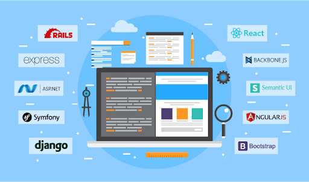

Frameworks CSS

Recuperado de: Netec.com
¿Qué es un framework?
Un framework de CSS es una biblioteca de estilos genéricos que puede ser usada para implementar diseños web. Aportan una serie de utilidades que pueden ser aprovechadas frecuentemente en los distintos diseños web. Proporcionan una forma fácil y rápida de implementar diseños web.
Clasificacion
Podemos clasificar los frameworks de css en dos tipos
Multipropósito: Proporcionan un conjunto de utilidades variadas útiles para distintos aspectos del desarrollo de un diseño web. Ej Cascade Framework.
Propósito específico: Están orientados a proporcionar herramientas para un propósito determinado. Por ejemplo, hay frameworks de CSS orientados a proporcionar herramientas para el desarrollo de rejillas (Ej. Responsive Grid System, Skeleton, Semantic Grid System), orientadas al control de la parte gráfica de la interfaz de usuario (Ej. Accordion, tabs, slideshow), orientados a la tipografía, etc.
Framework de CSS (2023). Recuperado 10 de abril de 2023, de WIKIPEDIA website: https://es.wikipedia.org/wiki/Framework_de_CSS
Ventajas
Principales Frameworks
Frameworks